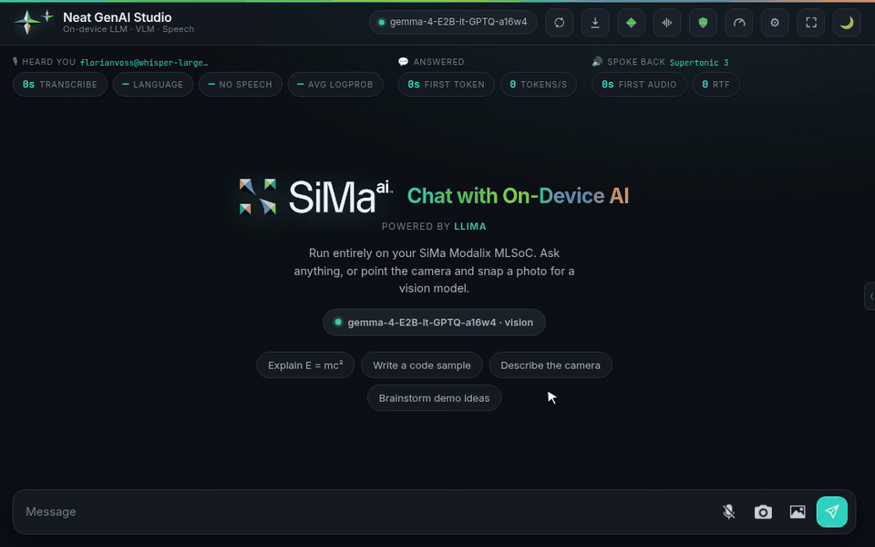
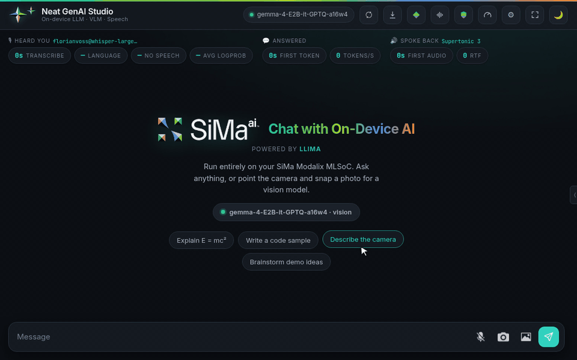
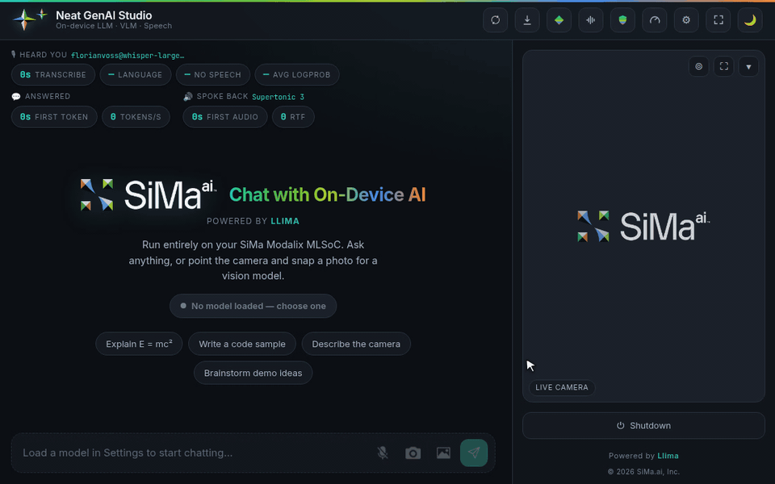
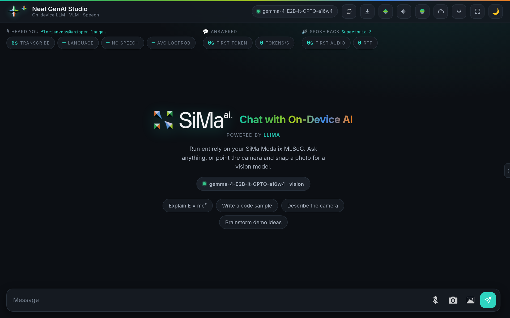
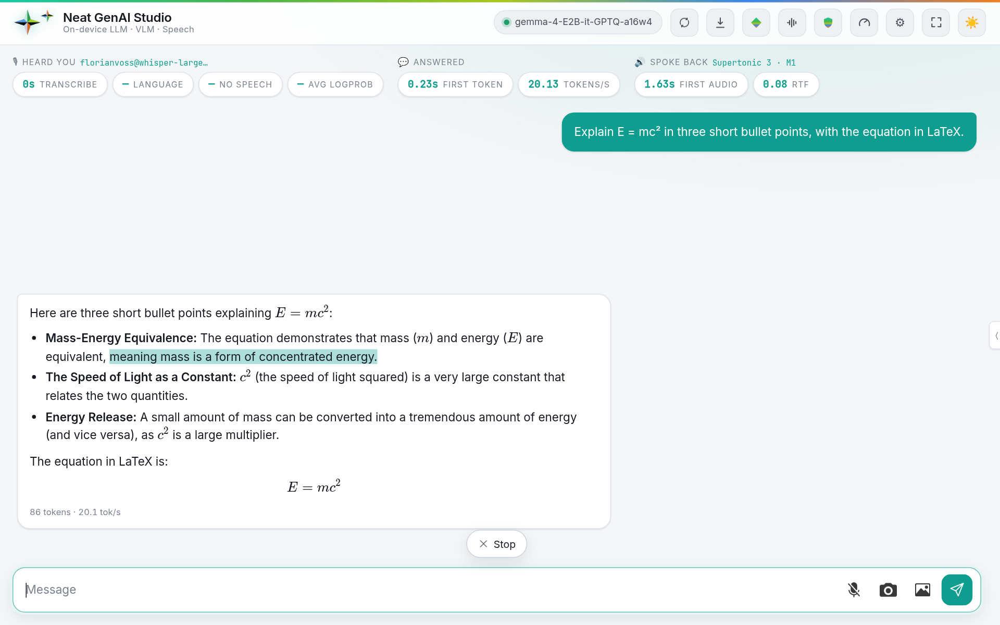
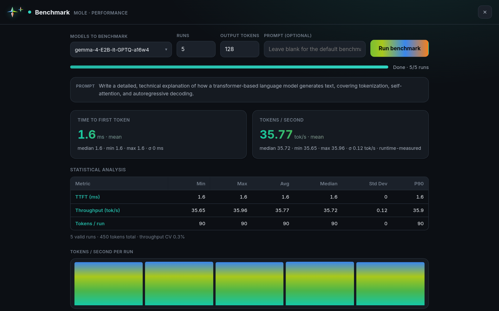
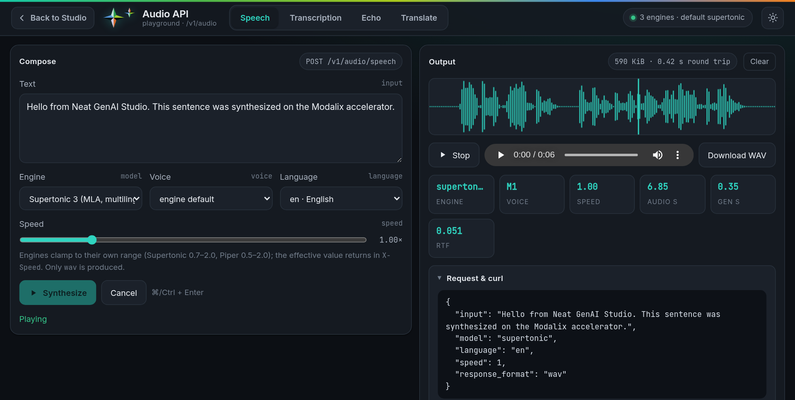
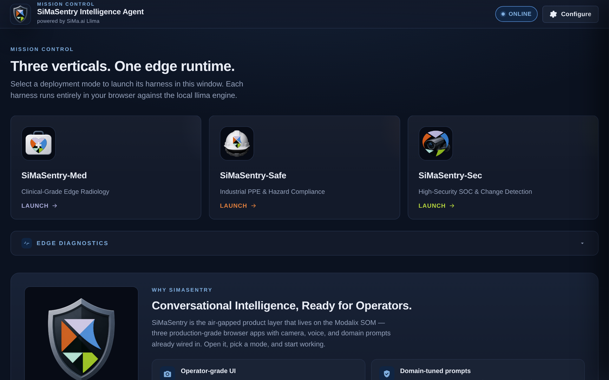
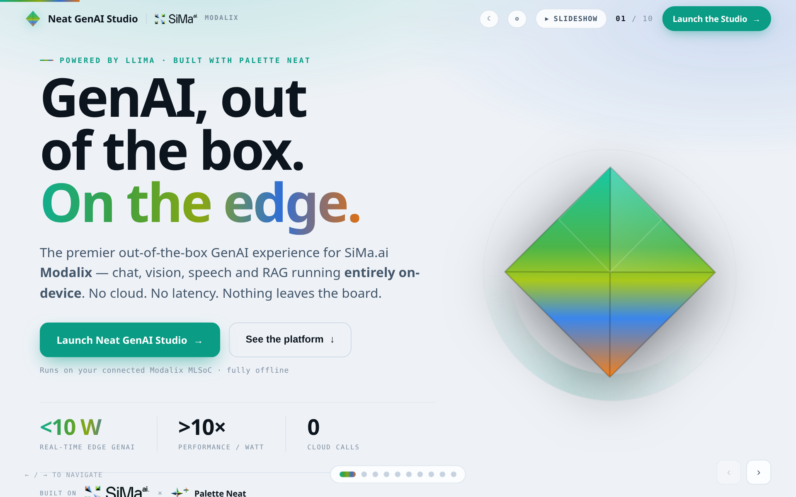

GenAI, out of the box. On the edge.
An on-device GenAI studio for the SiMa.ai Modalix MLSoC. Chat with language and vision models, talk to them, search your documents, and benchmark them, all running on the board. Use it from a web UI, a terminal client, or OpenAI-compatible APIs.

One studio for every modality on the chip.
The Studio starts with no chat model loaded. Pick one from the board or from Hugging Face, and it loads without a restart.
Ask about text, images and cameras
Stream Markdown, code and LaTeX replies. Upload a photo, use the browser camera, or snap one from a camera on the board for a vision-language model.
Load, switch, keep several
Load models at runtime with live progress. Keep one or several loaded side by side, and watch the accelerator's memory as you go.
Talk to it, hear it answer
Whisper transcribes on the accelerator. Replies are spoken by Supertonic or Piper voices, in English, German, Spanish, French, Italian, Japanese, Chinese and more.
Answer from your documents
Upload or import documents into a local Milvus Lite database with GTE-small embeddings, and let chat search them. Inspect, reset or clear it from Settings.
Measure TTFT and tokens per second
Benchmark one, several or all models, compare them side by side, and export the results as CSV or JSON, from the UI or the terminal.
OpenAI-compatible endpoints
Chat completions plus /v1/audio/speech, transcriptions and translations, with an API playground. --backend-only serves them without the UI for other front ends.
A chat client for SSH sessions
./run.sh --cli chats, loads, downloads and benchmarks models from the terminal, with several models open at once.
Download compiled models
Browse Modalix builds from SiMa.ai and community accounts, with download sizes and the free NVMe space, and download them straight to the board.
SiMaSentry demo harnesses
Med for clinical imaging, Safe for PPE and hazard inspection, Sec for threat analysis, each wired to the loaded model.
Captured on a Modalix DevKit.
















Three commands on the board.
Run these on a Modalix with the Neat development environment and the Neat Library (pyneat) installed.
Install
Fetches the Studio into ./neat-genai-studio. The installer depends only on this repository.
$ curl -fsSL https://raw.githubusercontent.com/dotimothy/neat-genai-studio/main/install.sh | bash $ cd neat-genai-studio
Set up
Installs the UI environment, the Whisper and embedding models, the voices and the RAG database. ./run.sh also does this on its first launch.
$ ./setup.shRun
Starts the model server and the web UI, then prints the address to open. Load or download a model from Settings → Models.
$ ./run.sh # web UI on https://<board>:5000 $ ./run.sh --cli # or chat in the terminal $ ./run.sh --backend-only # or only the APIs
Compiled for Modalix, one click away.
The Studio's Hugging Face browser searches dotimothy, simaai and florianvoss by default. These reasoning models were quantized to INT4 with GPTQ and compiled for Modalix with LLiMa.
DeepSeek-R1-Distill-Llama-8B-GPTQ-a16w4
An 8B reasoning model with INT4 weights, INT8 KV cache and an 8192-token context.
DeepSeek-R1-Distill-Qwen-1.5B-GPTQ-a16w4
A fast 1.5B reasoning model with INT4 weights, BF16 KV cache and an 8192-token context.